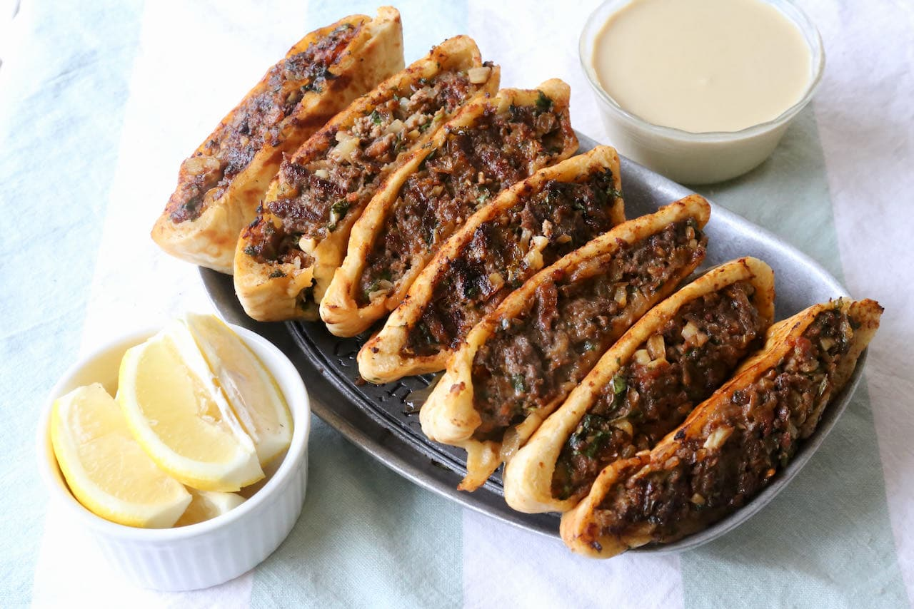

Cooking is one of my favorite things to do and I love to cook for the people I love. Cooking takes time is a proccess that needs patience and it has taught me that. I really grew my love of cooking from my sister who also had a passion
for baking and cooking. She taught me how to cook some of the first dishes of made which grew my love for cooking. To me cooking is not only about eating the food but it is almost like an art that needs a mix of food to make a new flavor or taste .
Things I have made
- Empenadas
- Gumbo
- Arayes
- Foccacia
- Naan and Butter chicken
- Dried Tomato Cream Pasta
- French onion Soup
Timeline
- 2010: Ate food for the first time
- 2016: Cooked my first meal which was eggs and pancakes
- 2018: Cooked use the oven for the first time
- 2020: Baked my first homade bread
- 2023: Started Making most family dinners
History of Cooking
The oldest evidence of cooking was observed early humans dating back to 780,000 years where a fish was cooked by fire. Cooking the meat allowed for santized food and healthleir humans. Then earth ovens, burnt animal bones, and flint,were used across Europe and the Middle East around
300,000 years ago. Then around 4000 years ago the first spices were started to be used for food the oldest of which is cinnmoin which comes from the part of a plant and was used in acient egpty and india for adding flavour to food. Spices were later sought after from india and south asia because the provided
Tastes to meat never seen before. The silk road was used to not only trade objects but food and psices from different cultures to new found places. Now today in the age of social media food can now be shared by one click of a button and recipes have been mixed and mathced from different culutres to fits peoples own tastes buds and cuisine
